Disentangled Transformer Motion Retargeting
Privacy-preserving skeleton motion retargeting via factorized transformers. Reducing re-identification to ~12% while preserving ~55% action recognition.
Overview
Disentangling motion from identity
DisentangledTMR transfers motion from one skeleton to another—preserving the action while removing personally identifiable information through factorized transformer decoding.
Privacy Protection
Reduces re-identification from 75.4% to 18.1% by disentangling identity-specific features like body proportions and gait patterns.
Action Preservation
Maintains 75.8% pre-trained action recognition accuracy—well above PMR (35.7%) and DMR (49.1%) baselines.
Factorized Decoding
Adaptive fusion gate learns per-joint, per-frame blending: out = g · action + (1-g) · identity for fine-grained control.
Adversarial Disentanglement
Gradient reversal layer prevents action encoder from capturing identity, enforced alongside contrastive and orthogonality losses.
Asymmetric Encoders
Action encoder (768D) captures temporal dynamics; identity encoder (256D) intentionally limited to prevent identity leakage.
Cross-Dataset Transfer
Evaluated on NTU60, NTU120, and ETRI-Activity3D. Near-chance RI on ETRI confirms strong generalization.
Model Design
Architecture overview
Three specialized components with asymmetric capacity. The action encoder captures temporal dynamics, the identity encoder models skeletal structure, and the factorized decoder fuses them through adaptive gating.
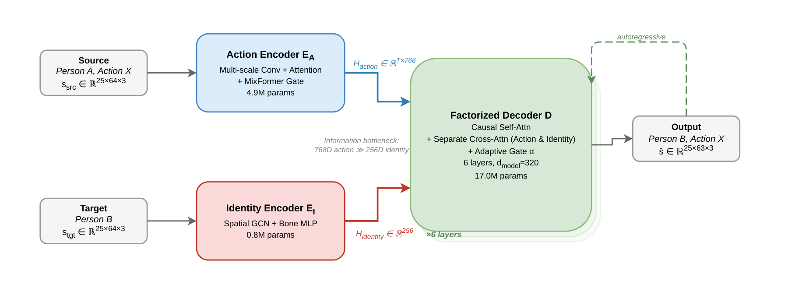
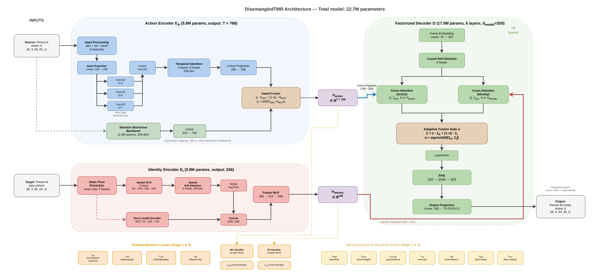
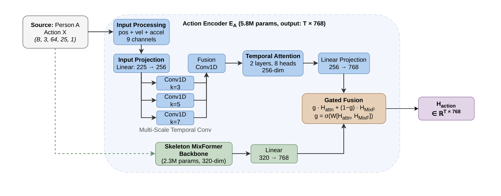
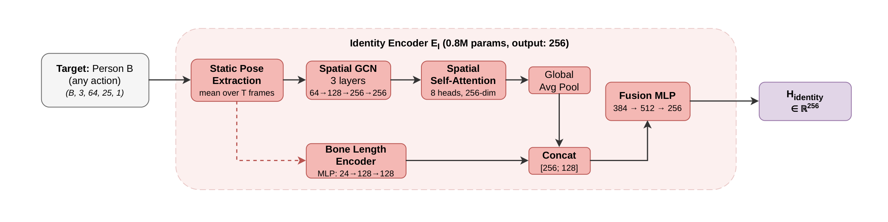
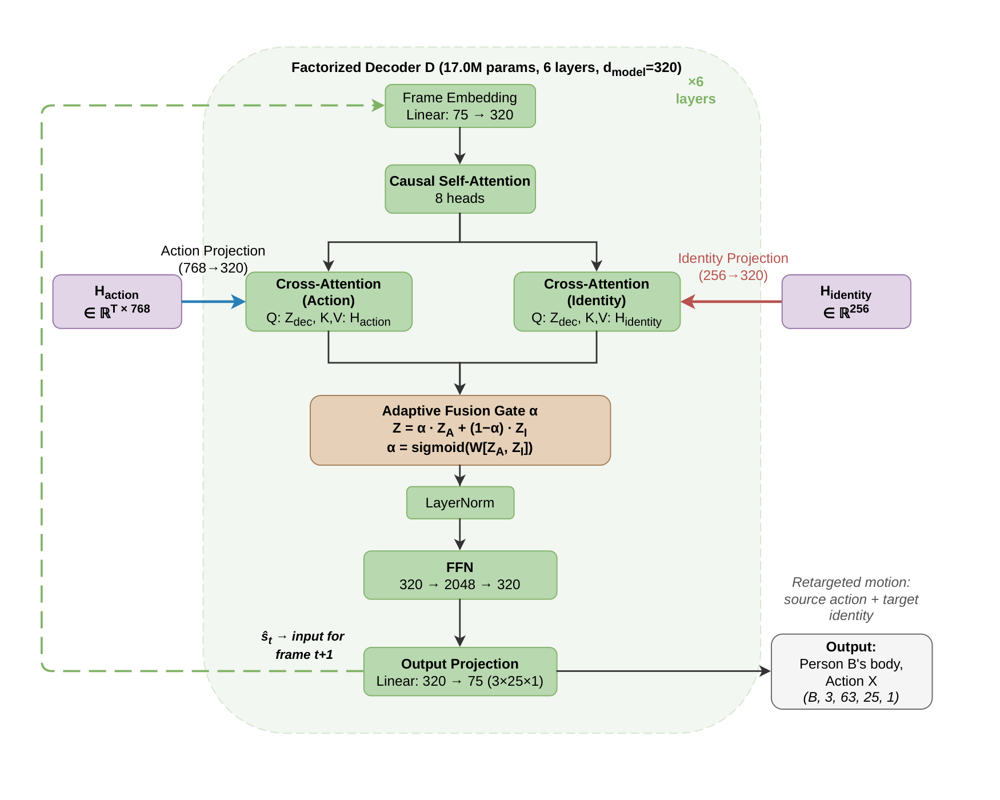
Action Encoder
Multi-scale temporal convolution (kernels 3, 5, 7), temporal attention + LSTM, MixFormer backbone fused via learned gating.
Identity Encoder
3-layer spatial GCN on skeleton graph topology with bone length encoding. Takes temporal mean of pose to remove dynamics.
Factorized Decoder
Separate cross-attention streams with adaptive fusion gate: out = g · action + (1-g) · identity. Autoregressive with scheduled teacher forcing.
Experimental Results
Performance evaluation
Evaluation on NTU RGB+D 60/120 and ETRI-Activity3D at the recommended operating point β=0.2. Primary protocol: a pre-trained SGN evaluator (trained on raw data, applied to retargeted output). Secondary: a re-trained SGN action classifier. Higher AR and lower RI is better.
| Method | Pre-trained AR ↑ | Pre-trained RI ↓ | Re-trained AR ↑ | MSE ↓ | MPJPE ↓ |
|---|---|---|---|---|---|
| Raw Skeleton | 89.1% | 75.4% ↑ | 89.1% | — | — |
| DMR | 49.1% | 25.7% | 43.1% | 0.047 | 0.202 |
| PMR | 35.7% | 7.8% | 19.9% | 0.050 | 0.272 |
| DisentangledTMR (Ours, β=0.2) | 75.8 ± 1.1% | 18.1 ± 1.8% | 87.1% | 0.030 | 0.113 |
Privacy-Utility Trade-off
Component Ablation
Ablation study
| Variant | Pre-trained AR ↑ | Pre-trained RI ↓ |
|---|---|---|
| Baseline (stable) | 82.6% | 51.9% |
| Static Identity | 82.2% | 48.5% |
| No Adversarial (GRL) | 82.2% | 49.0% |
| No Orthogonality | 82.4% | 47.9% |
| No Action Backbone | 82.2% | 46.4% |
| No Temporal Convs | 82.2% | 48.2% |
| Full-Seq Identity | 82.2% | 45.9% |
Multi-Metric Radar
Training Stage Comparison
Training stage ablation
| Training Stages | Pre-trained AR ↑ | Pre-trained RI ↓ |
|---|---|---|
| Stage 3 only | 82.6% | 52.4% |
| Stages 2→3 | 82.5% | 55.3% |
| Stages 1→3 | 82.3% | 53.4% |
| Stages 1→2 | 81.1% | 35.5% |
| Stage 1 only | 57.3% | 15.3% |
Output-level supervision drives privacy
With no output supervision, RI sits at 43.4% (81.0% AR). Adding the output action classifier alone barely moves it (42.2%). Only the full suite of four output-level losses pushes RI down to 18.1% — the key driver of the privacy–utility trade-off.
Computational Cost
22.7M parameters, ~28 GPU-hours to train the full pipeline, ~458ms/seq at batch 1 on an NVIDIA A40. Higher inference cost is driven by autoregressive decoding (63 sequential steps). DMR: 4.9M, ~1ms. PMR: 1.0M, ~1ms.
Partial retargeting (β blending)
The output blends the retargeted skeleton with the source: ŝβ = β·retargeted + (1−β)·source. β trades utility for privacy. Pre-trained AR shows a sharp cliff between β=0.2 and β=0.25, while re-trained AR degrades gradually — action information survives across the full range. β=0.2 is the recommended operating point.
| β | Pre-trained AR ↑ | Pre-trained RI ↓ | Re-trained AR ↑ |
|---|---|---|---|
| 0.00 (raw) | 89.1% | 75.4% ↑ | 89.1% |
| 0.05 | 84.8% | 61.4% | 87.8% |
| 0.10 | 82.7% | 52.0% | 87.3% |
| 0.15 | 80.0% | 37.5% | 86.9% |
| 0.20 ◀ | 76.8% | 17.3% | 87.1% |
| 0.25 | 38.8% | 9.6% | 85.3% |
| 0.50 | 27.7% | 3.1% | 84.6% |
| 1.00 (full) | 2.0% | 4.7% | 55.4% |
Cross-dataset generalization
| β | NTU-60 | NTU-120 | ETRI | |||
|---|---|---|---|---|---|---|
| AR ↑ | RI ↓ | AR ↑ | RI ↓ | AR ↑ | RI ↓ | |
| 0.00 (raw) | 89.1% | 75.4% | 88.2% | 67.6% | 90.8% | 45.6% |
| 0.10 | 82.7% | 52.0% | 85.3% | 62.4% | 90.0% | 43.0% |
| 0.20 | 76.8% | 17.3% | 81.4% | 39.4% | 87.8% | 35.7% |
| 0.30 | 42.8% | 14.3% | 73.5% | 22.8% | 84.0% | 26.0% |
| 0.50 | 27.7% | 3.1% | 47.1% | 9.9% | 67.3% | 10.4% |
| 1.00 (full) | 2.0% | 4.7% | 2.6% | 0.9% | 3.7% | 1.0% |
Training Protocol
Three-stage training pipeline
A curriculum-based approach: first establish disentanglement, then learn reconstruction, and finally fine-tune end-to-end.
Encoder Pretraining
Train action and identity encoders with classification heads and disentanglement losses. Establishes clean separation of action and identity representations.
Decoder Training
Train the factorized decoder with reconstruction and physical plausibility losses. Teacher forcing anneals from 1.0 to 0.5.
End-to-End Fine-tuning
Joint optimization of all components with all losses active. Produces checkpoint_stage3_best.pth.
Loss Functions
Loss functions
Over 10 loss terms, jointly optimized with Optuna-tuned weights, ensure disentanglement, reconstruction quality, and physical plausibility.
Disentanglement Losses
Contrastive (InfoNCE)
$$\mathcal{L}_\text{NCE} = -\log \frac{\exp(\text{sim}(z_i, z_{j}^+)/\tau)}{\sum_k \exp(\text{sim}(z_i, z_k)/\tau)}$$Pulls same-action embeddings together, pushes different actions apart.
Adversarial (GRL)
$$\mathcal{L}_\text{adv} = -\text{CE}(\text{GRL}(h_\text{action}), y_\text{identity})$$Gradient reversal prevents action encoder from capturing identity.
Orthogonality
$$\mathcal{L}_\text{orth} = \|H_\text{action}^\top H_\text{identity}\|_F^2$$Penalizes correlation between action and identity representations.
Mutual Information
$$\mathcal{L}_\text{MI} = \hat{I}(H_\text{action}; H_\text{identity})$$Minimizes shared information between the two spaces.
Reconstruction & Physical Losses
MSE Reconstruction
$$\mathcal{L}_\text{MSE} = \frac{1}{T \cdot V \cdot 3} \sum_{t,v} \|\hat{x}_{t,v} - x_{t,v}\|^2$$Joint-level reconstruction accuracy over all frames and vertices.
Bone Length
$$\mathcal{L}_\text{bone} = \sum_{e \in E}\sum_t \big| \|\hat{b}_{e,t}\| - \|b_e^\text{tgt}\| \big|$$Preserves target skeleton proportions in the output.
Temporal Smoothness
$$\mathcal{L}_\text{smooth} = \sum_t \|\hat{x}_{t+1} - \hat{x}_t\|^2$$Penalizes jittery motion between consecutive frames.
Additional
Velocity: Matches motion speed profiles.
End-Effector: Preserves hand/foot positions.
Foot Contact: Ground plane consistency.
Joint Limits: Anatomical constraints.
Optuna-optimized weights (Trial 52, objective: 0.7·AR − 0.3·RI)
Analysis
Analysis & figures
t-SNE embeddings, gate analysis, and qualitative visualizations demonstrating the effectiveness of architectural disentanglement.
Retargeting examples
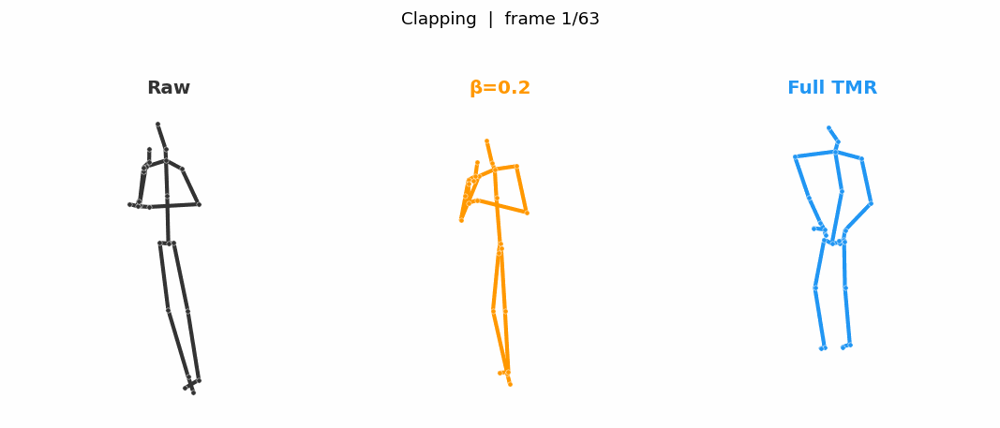
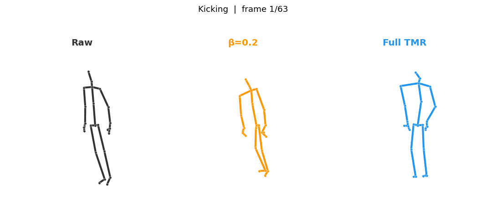
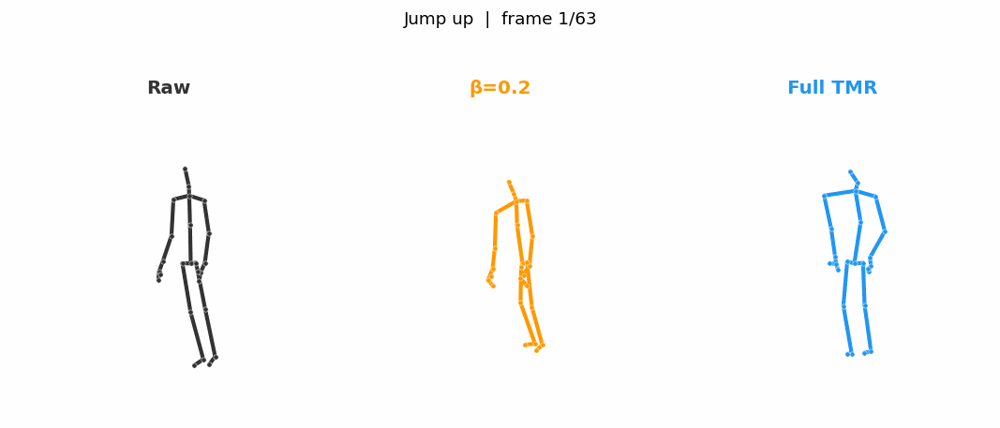
Embedding analysis
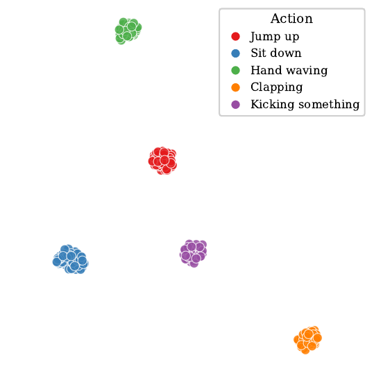
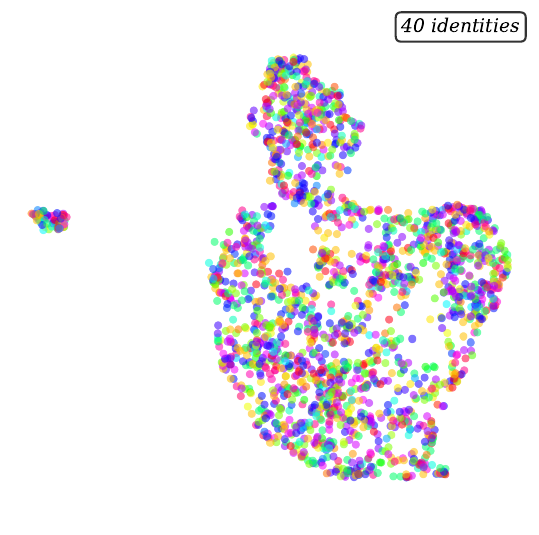
Adaptive fusion gate
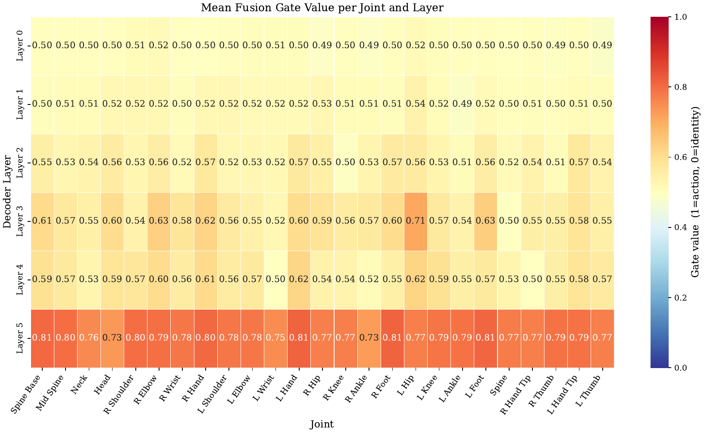
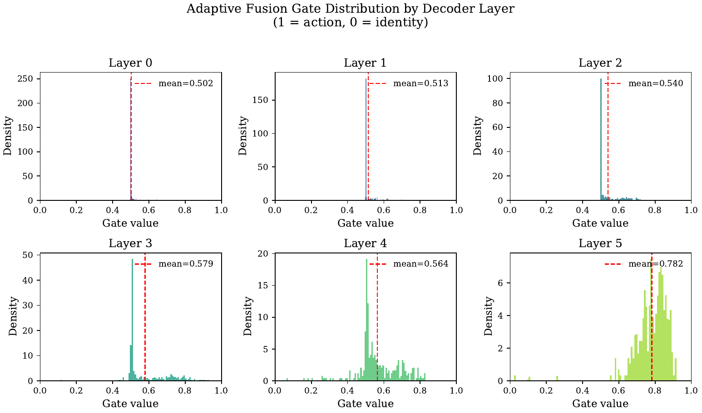
Supplementary experiments
| σ | MPJPE vs. Clean | Bone Error |
|---|---|---|
| 0.00 | 0.000 | 0.0049 |
| 0.01 | 0.001 | 0.0049 |
| 0.02 | 0.002 | 0.0049 |
| 0.05 | 0.008 | 0.0050 |
| 0.10 | 0.021 | 0.0053 |
| 0.20 | 0.049 | 0.0057 |
| Drop Rate | MPJPE vs. Clean | Bone Error |
|---|---|---|
| 0.00 | 0.000 | 0.0049 |
| 0.05 | 0.013 | 0.0051 |
| 0.10 | 0.021 | 0.0052 |
| 0.20 | 0.033 | 0.0053 |
| 0.30 | 0.042 | 0.0053 |
| Frames | MPJPE vs. Clean | Bone Error |
|---|---|---|
| 64 | 0.000 | 0.0049 |
| 48 | 0.002 | 0.0049 |
| 32 | 0.003 | 0.0049 |
| 16 | 0.004 | 0.0049 |
| 8 | 0.007 | 0.0048 |
| Dataset | Sequences | Actions | Subjects | Joints | Pairs | Split |
|---|---|---|---|---|---|---|
| NTU60 | 56,880 | 49 | 40 | 25 | 10k | X-View |
| NTU120 | 114,480 | 94 | 106 | 25 | 10k | X-View |
| ETRI | 112,620 | 55 | 100 | 25 | 10k | X-View |
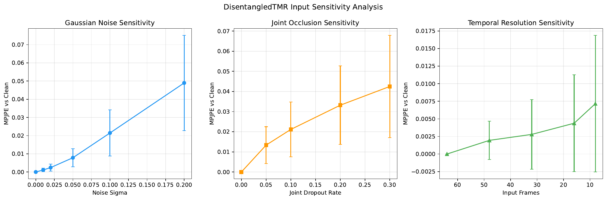
Getting Started
Usage & CLI
DisentangledTMR uses the tmr.py CLI for training, evaluation, and pipeline orchestration. Auto-detects local vs. SLURM environments.
Hardware
GPU: NVIDIA A40 / RTX 3090
Training: ~55 epochs total
Framework: PyTorch 2.0+
Data Format
Shape: (B, 3, 64, 25, 1)
Joints: 25 NTU skeleton
Frames: 64 per sequence
Model
Params: 22.7M total
Action Enc: 768D output
Identity Enc: 256D output
Output
Checkpoint: stage3_best.pth
Inference: ~458ms/seq
Config: main_config.yaml
Installation
git clone https://github.com/Thomasc33/Transformer-Retargeting.git cd Transformer-Retargeting python -m pip install -r requirements.txt
Training
Quick Start (CLI)
The simplest way to train. Auto-detects SLURM for HPC job submission.
# Train with default stable config python tmr.py train --experiment stable # Check experiment status python tmr.py status # Run full pipeline python tmr.py run-pipeline
Full Control
Direct script invocation with all hyperparameters exposed.
# Train with explicit parameters python scripts/train_disentangled_tmr_stages.py \ --data_path data/ntu/ntu_cv_paired_10k.pt \ --dataset ntu \ --output_dir output/disentangled_tmr_stable
Evaluation & Generation
Evaluate Checkpoint
Evaluate a trained model on any supported dataset.
# Evaluate on NTU60 python tmr.py eval \ --checkpoint output/disentangled_tmr/checkpoint_stage3_best.pth \ --data_path data/ntu_cv_paired_comprehensive.pt \ --dataset ntu
Generate & Downstream
Create retargeted datasets and train downstream classifiers.
# Generate retargeted dataset python scripts/generate_retargeted_dataset.py # Train downstream classifiers (SGN, MixFormer) python scripts/train_downstream_models.py
Experiments
Experiment status
All experiments completed across datasets and configurations.
NTU60 Main Result
5 seeds at β=0.2. Pre-trained AR: 75.8 ± 1.1% | RI: 18.1 ± 1.8%. Re-trained AR: 87.1%.
Component Ablation
7 architectural variants evaluated (post-hoc β=0.2, pre-trained SGN).
Stage Ablation
5 training-stage configurations. Full 3-stage protocol validated.
Cross-Dataset
NTU60, NTU120, ETRI β sweeps. Privacy transfers across datasets.
Output-Level Supervision
Four output losses drive RI from 43.4% down to 18.1% at β=0.2.
Computational Analysis
22.7M params, ~28 GPU-h, ~458ms/seq benchmarked on NVIDIA A40.
Partial Retargeting
Full β sweep (0.0→1.0) on NTU60 with pre-trained and re-trained evaluators.
Paper
Accepted to ECCV 2026.
Last updated: Feb 24, 2026 · SLURM cluster
Citation
Cite this work
If you use DisentangledTMR in your research, please cite our ECCV 2026 paper.
@InProceedings{Carr_2026_ECCV,
author = {Carr, Thomas and Xu, Depeng and Yuan, Shuhan and Lu, Aidong},
title = {DisentangledTMR: Privacy-Preserving Skeleton Motion
Retargeting via Factorized Transformers},
booktitle = {Proceedings of the European Conference
on Computer Vision (ECCV)},
year = {2026}
}
Conference: European Conference on Computer Vision (ECCV) 2026
Authors: Thomas Carr, Depeng Xu, Shuhan Yuan, Aidong Lu
Affiliation: UNC Charlotte